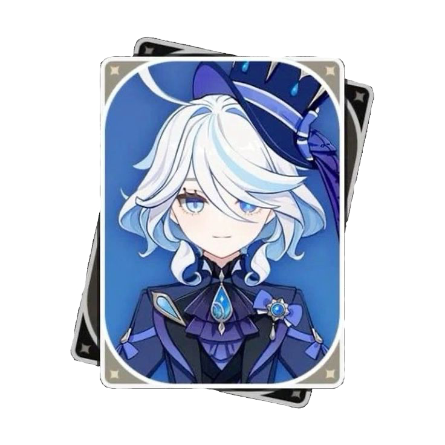

Furina


Hydro Archon • The Star of Fontaine


Normal Attack: Performs up to four consecutive attacks.
Charged Attack: Consumes a certain amount of stamina and begins a solo dance that deals physical damage to nearby enemies and changes the arche's appearance. If there are salon participants or the Stream Singer summoned by her elemental skill, Lonely Hearts Salon, on the battlefield, they will change to a different type of guest.
Arche: Sacred and Mundane Sites: After a certain interval, when Furina's normal attack hits an enemy, a Soulbreath Needle or Stormwater Blade appears in its place, depending on Furina's Arche type, dealing Hydro damage to the Pneuma or Usii, respectively. When Furina enters the battlefield, she has an Usii Arche.